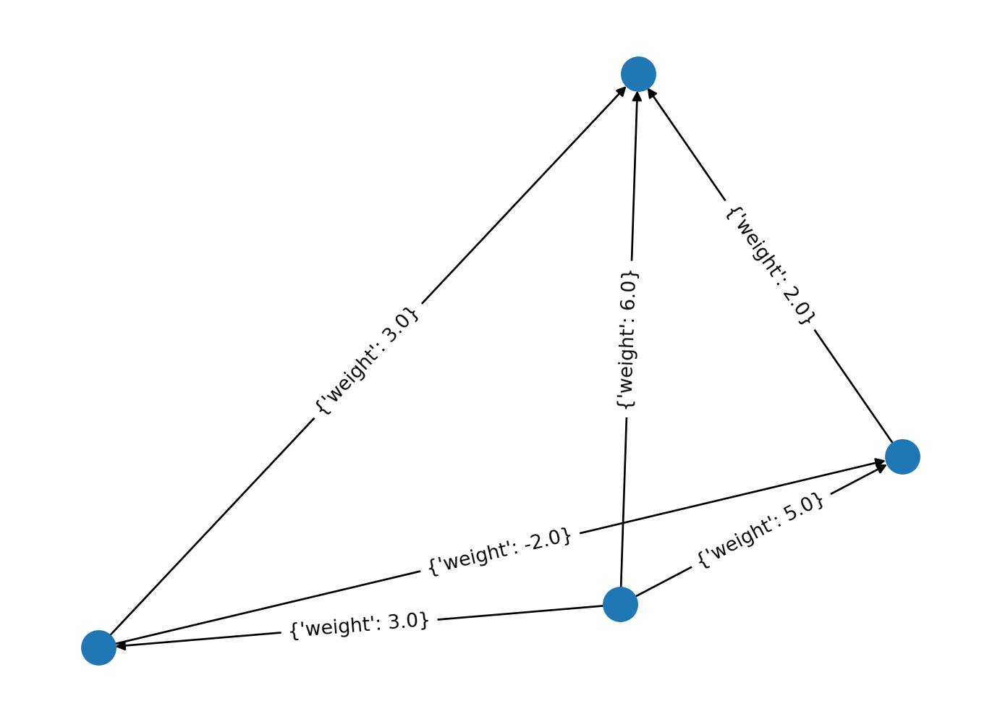

import numpy as np
import networkx as nx
Mp = np.array([[0,3,1,4],[5,0,2,2],[4,0,0.,6],[10,7,9,0]])
spread = Mp-Mp.T
spreadn=np.tril(spread) #takes the lower triangular part of the spread matrix
G = nx.from_numpy_array(spreadn, create_using=nx.DiGraph) # this imports the spread matrix as a directed graph, with weights
im_unweighted =nx.incidence_matrix(G,oriented=True,weight=None).todense() # an unweighted incidence graphProjects 2 Solutions
Instructions:
Please do all three projects. However, in the first project (Modeling with Directed Graphs), you can choose which three parts of the five you’d like to complete.
1 Chapter 3 Projects
1.1 1. Modeling with Directed Graphs
Project Descriptions: This project introduces more applications of digraphs as mathematical modeling tools. You are given that the digraph \(G\) has vertex set \(V=\{1,2,3,4,5,6\}\) and edge set
\[ E=\{(1,2),(2,3),(3,4),(4,2),(1,4),(3,1),(3,6),(6,3),(4,5),(5,6)\} \]
Address the following points regarding \(G\).
Draw a picture of this digraph. You may leave space in your report and draw this by hand, or if you prefer, you may use the computer drawing applications available to you on your system.
Exhibit the incidence matrix \(A\) of this digraph and find a basis for \(\mathcal{N}(A)\) using its reduced row echelon form. Some of the basis elements may be algebraic but not directed loops. Use this basis to find a basis of directed loops (e.g., non-directed basis element \(\mathbf{c}_{1}\) might be replaced by directed \(\mathbf{c}_{1}+\mathbf{c}_{2}\) ).
Hints:
A cycle is a group of nodes that connect around in a circle. (The term “loop” is usually reserved for cases where a node connects back to itself with a single edge, although our textbook author uses “loop” broadly to mean “cycle”.)
If a graph includes only a cycle, each node must have either a) one incoming and one outgoing edge or b) no edges at all
In incidence matrices, incoming edges are represented with -1 and outgoing edges with +1.
In an incidence matrix, each row corresponds to all the edges coming in and out of a particular node
- Therefore in an the incidence matrix of a digraph which is a cycle, every row must sum to zero
To find all of the cycles in a graph, we can look for combinations of edges within the graph which are cycles. This corresponds to combinations of columns in the incidence matrix for which all rows sum to zero.
- This is just the nullspace of the incidence graph
- the nullspace is the basis for all solutions to the equation Ax=0
- each column in the nullspace tells us a set of coefficients which can multiply the columns of the incidence matrix so that the rows can sum to zero.
- Example: if our nullspace has a column vector [0,1,0,1]^T, this tells us that column 2 + column 4 of the incidence matrix will sum to zero.
- Of course, when we calculate a nullspace, we allow for columns to be added or subtracted. This corresponds to having negative numbers in the column vectors of the nullspace.
- If we subtract a column in the incidence matrix, this is like switching the directionality of an edge.
- We can decide if we are interested in allowing cycles formed in this manner!
- This is just the nullspace of the incidence graph
Each column of the nullspace will be tell the indices of the columns in the incidence graph which represent edges making up a single cycle. Together, they make up a basis for forming all of the cycles present in the graph as a whole.
A reminder, an “algebraic loop” is a cycle where we don’t care about the directionality of the edges, while a “directed loop” is one where we do respect the directionality.
Pick three of the following to complete:
- Think of the digraph as representing an electrical circuit where an edge represents some electrical object like a resistor or capacitor. Each node represents the circuit space between these objects. We can attach a potential value to each node, and a voltage, or potential difference, to each edge. The voltage across an edge is the potential value of the head node minus the potential value of the tail node. If we have specified the potentials, then for any cycle in our graph, the sum of the voltages around the cycle will automatically be zero. (This result is called Kirchhoff’s second law of electrical circuits.) However, if we don’t specify the potentials but instead specify the voltages across the edges, then it is possible to choose voltages such that the sum of voltages around a cycle is not zero. This is equivalent to choosing voltages which cannot correspond to any actual set of potentials.
Your goal here is to find conditions that a vector \(\mathbf{b}\) must satisfy in order for it to be a vector of voltages for some unknown distribution of potentials on the nodes. Use the fact (p. 422) that \(A \mathbf{x}=\mathbf{b}\) implies that for all \(\mathbf{y} \in \mathcal{N}\left(A^{T}\right), \mathbf{y}^{T} \mathbf{b}=0\).
- The valid values for \(b\) are those which can be written as \(Ax=b\) for some \(x\). That is, \(b\) must be in the column space of \(A\).
- Separately, we know a subset of edgesform a loop in the graph iff the sum of the rows in A corresponding to this subset sums to 0. If \(y\) is a column vector with 1s for each edge in the subset, and 0s elsewhere, then the sum of the corresponding rows is \(y^T A\). Since we want this sum to be zero, we have \(y^T A = 0\) and therefore \(A^T y=0\) so we conclude that if \(y\) is a subset of edges representing a loop, \(y\) must be in the nullspace of \(A^T\).
Putting these two together, we can use matrix algebra to show that if \(y\) is in the nullspace of \(A^T\) and \(b\) is in the column space of \(A\), then \(y^T b = 0\).
That means that for any valid set of potential differences (\(b\)), and any set of edges that form a loop (\(y\)), the potential differences along the edges of the loop, as given by \(y^T b\), will be zero.
Assume that across each edge of a circuit a current flows. Thus, we can assign to each edge a “weight,” namely the current flow along the edge. This is an example of a weighted digraph. However, not just any set of current weights will do, since Kirchhoff’s first law of circuits says that the total flow of current in and out of any node should be 0 . Use this law to find a matrix condition that must be satisfied by the currents and solve it to exhibit some current flows.
Think of the digraph as representing a directed communications network. Here loops determine which nodes have bidirectional communication since any two nodes of a loop can only communicate with each other by way of a loop. By examining only a basis of directed loops how could you determine which nodes in the network can communicate with each other?
Think of vertices of the digraph as representing airports and edges representing flight connections between airports for Gamma Airlines. Suppose further that for each connection there is a maximum number of daily flights that will be allowed by the destination airport from an origin airport and that, in the order that the edges in \(E\) are listed above, these limits are
\[ M=\{4,3,8,7,2,6,7,10,5,8\} . \]
Now suppose that Gamma wants to maximize the flow of flights into airport 1 and out of airport 6 . Count inflows into an airport as positive and outflows as negative. Assume that the net in/outflow of Gamma flights at each airport 1 to 5 is zero, while the net inflow of such flights into airport 1 matches the net outflow from 6 .
Describe the problem of maximizing this inflow to airport 1 as a linear programming problem and express it in a standard form (block matrices are helpful.) Note that the appropriate variables are all outflows from one airport to another, i.e., along edges, together with the net inflow into airport 1.
Solve the problem of part (a). Also solve the reverse problem: Maximize inflow into airport 6 and matching outflow from 1. Explain and justify your answers.
- With the same limits on allowable flights into airports as in item 5, suppose that Gamma Airlines wants to determine an allocation of planes that will maximize their profits, given the following constraints: (1) Airports 1 and 6 have repair facilities for their planes, so no limit is placed on the inflow or outflow of their planes other than the airport limits. (2) Flights through airports 2-5 of Gamma planes are pass through, i.e., inflow and outflow must match. (3) Gamma has 32 planes available for this network of airports. (4) The profits per flight in thousands are, in the order that the edges in \(E\) are listed above,
\[ P=\{5,6,7,9,10,8,9,5,6,10\} \] (a) Set this problem up as a linear programming problem in standard form. Clearly identify the variables and explain how the constraints follow.
- Solve this problem explicitly and specify the operations taken to do so. Example 3.56 is instructive for this problem, so be aware of it. Use a technology tool that allows you to use elementary operations (ALAMA calculator has this capability).
2 Chapter 4 Projects
2.1 2. Image Compression and Edge Detection
Problem Description: In this report you will test some limits of data compression by experimenting with an interesting image of your own choosing. It could be a photograph you have taken or some reasonably complex image from the internet that piqued your interest. You are to transform the image into suitable format and then see how much you can can compress that data storage requirements for that image while losing an acceptable amount of detail.
Implementation Notes: First, you must convert the image to a grayscale format without layers with pixels stored as unsigned eight bit integers. (We are not going to deal with the additional details of color images.) For this you will need an image manipulation program such as the GNU program Gimp or commercial software such as Adobe Photoshop. Figure 4.7(a) is an example of the sort of file you with which you will start experimenting. Secondly, you will need a technology tool capable of importing standard flattened image grayscale images (such as .png, etc.) into matrices and vice versa. The freely available \(\mathrm{R}\) programming language and Octave, as well as commercial Matlab and others are perfectly capable of these tasks. For the record, Figure 4.7 and its relatives in this chapter were converted from .pdf into grayscale .png images via Gimp and read, manipulated and written as matrices via Octave.
Next, you must apply the Haar wavelet transform repeatedly to your initial image until you reach a blur that is unacceptably far from the initial image. These computations will require a mild bit of programming on your part with the technology tool of your choice. Each application of the transform will reduce storage requirements by a factor of four. How much are you able to save? Of course, “unacceptably far” is in the eye of the beholder, but here’s a pretty reasonable case: Start with a some text and compress it until you can no longer read the text.
A picture is worth a thousand words, so be lavish with them in your write-up. Consider the amount of savings if, in addition to saving the blurs in all their detail, you were to to save a very good approximation to the edges portion of the transformed picture. For example, consider what you might achieve by first applying some thresholding condition to edge portions of the picture that sets all pixels below a certain level to zero, then accounting for the large number of resulting zeros by some compression technique. You might even suggest a format for such a compression format.
2.2 3. Least Squares
Pick a league in a sport that you like. For example, you could pick the WNBA for basketball, or a soccer league. Pick a point halfway through last year’s season. You will use the data from the games played up to that point to predict the outcome of the season.
Start by making a table of scores from the games played thus far: The \((i, j)\) th entry is team \(i\) ’s score in the game with team \(j\). (See below for an example.)
Then, you will want to use the ideas of least squares and graph theory to predict team ratings and point spreads for the remaining games. The idea is to set up a system of equations that will give you the best fit to the observed scores. You will need to use the ideas of least squares to solve this system of equations. (See below for more details.)
Finally, write a brief report on your project that describes the problem, your solution to it, its limitations, and the ideas behind it.
| \(\mathrm{CU}\) | \(\mathrm{IS}\) | \(\mathrm{KS}\) | \(\mathrm{KU}\) | \(\mathrm{MU}\) | \(\mathrm{NU}\) | \(\mathrm{OS}\) | \(\mathrm{OU}\) | |
|---|---|---|---|---|---|---|---|---|
| \(\mathrm{CU}\) | 24 | 21 | 45 | 21 | 14 | |||
| \(\mathrm{IS}\) | 12 | 42 | 21 | 16 | 7 | |||
| \(\mathrm{KS}\) | 12 | 21 | 3 | 27 | 24 | |||
| \(\mathrm{KU}\) | 9 | 14 | 30 | 10 | 14 | |||
| \(\mathrm{MU}\) | 8 | 3 | 52 | 18 | 21 | |||
| \(\mathrm{NU}\) | 51 | 48 | 63 | 26 | 63 | |||
| \(\mathrm{OS}\) | 41 | 45 | 49 | 42 | 28 | |||
| \(\mathrm{OU}\) | 17 | 35 | 70 | 63 | 31 |
Implementation Notes: You will need to set up a suitable system of equations, form the normal equations, and have a technology tool solve the problem. The equations in question are formed by letting the variables be a vector x of “potentials” \(x(i)\), one for each team \(i\), so that the “potential differences” best approximate the actual score differences (i.e., point spreads) of the games. To find the vector \(\mathbf{x}\) of potentials you solve the system \(A \mathbf{x}=\mathbf{b}\), where \(\mathbf{b}\) is the vector of observed potential differences. N.B: the matrix \(A\) is not the table given above. You will get one equation for each game played. For example, by checking the \((1,2)\) th and \((2,1)\) th entries, we see that \(\mathrm{CU}\) beat IS by a score of 24 to 12 . So the resulting equation for this game is \(x(1)-x(2)=24-12=12\). Ideally, the resulting potentials would give numbers that would enable you to predict the point spread of an as yet unplayed game: all you would have to do to determine the spread for team \(i\) versus team \(j\) is calculate the difference \(x(j)-x(i)\). Of course, it doesn’t really work out this way, but this is a reasonable use of the known data. When you set up this system, you obtain an inconsistent system. This is where least squares enter the picture. You will need to set up and solve the normal equations, one way or another. You might notice that the null space of the resulting coefficient matrix is nontrivial, so this matrix does not have full column rank. This makes sense: potentials are unique only up to a constant. To fix this, you could arbitrarily fix the value of one team’s potential, that is, set the weakest team’s potential value to zero by adding one additional equation to the system of the form \(x(i)=0\).
From Hanyan:
“Now, why do we want to use the graph formalism? The system of equations we will define will be very close to the incidence matrix of a graph. How? Let us check out a simplified example first. Suppose we have three teams A, B, C. Using the same formalism as the problem, the table will be given as follows, the first column and row will be A, second will be B, and third will be C: \(\begin{bmatrix} & 2 & 3 \\ 3 & & 1 \\ 8 & 2 & \end{bmatrix}\). For example, from this matrix we know that team A played against team B and team A had a score of 2, team B had a score of 3. (This table representation is not important for us here, because we will analyze the data straight from the imported csv) Then, the absolute value of the score difference will be 1. One linear equation we have is then going to be \(x(A) - x(B) = 1\), where the X will be the three dimension vector \(\begin{bmatrix} x(A) \\ x(B) \\ x(C) \end{bmatrix}\) and 1 is the absolute value of the score difference. Hopefully you can already see the resemblance! From this one system of equation we can get the matrix \(\begin{bmatrix} 1 & -1 & 0 \end{bmatrix}\begin{bmatrix} x(A) \\ x(B) \\ x(C) \end{bmatrix} = 1\). If we take the transpose of \(\begin{bmatrix} 1 & -1 & 0 \end{bmatrix}\), it looks like a column of the incidence matrix of a graph! Note that I intentionally made the equation \(x(A) - x(B) = 1\), which represents the edge B goes to A, representing that B wins over A. Then we can put this into a graph, the incidence matrix of this graph will have that transpose as a column vector! Therefore, the graph formalism will provide us with an easy way to construct our systeam of linear equations.”
layout = nx.spring_layout(G)
nx.draw(G, layout)
nx.draw_networkx_edge_labels(G, pos=layout){(1, 0): Text(0.44023123599148406, 0.3940119373311718, "{'weight': 2.0}"),
(2, 0): Text(-0.4214738180797425, 0.1852428374535212, "{'weight': 3.0}"),
(2, 1): Text(-0.1382949459287735, -0.2326659985569004, "{'weight': -2.0}"),
(3, 0): Text(0.1382949459287735, 0.23266599855690057, "{'weight': 6.0}"),
(3, 1): Text(0.4214738180797425, -0.18524283745352102, "{'weight': 5.0}"),
(3, 2): Text(-0.440231235991484, -0.3940119373311717, "{'weight': 3.0}")}
def get_edge_attributes(G, name):
# ...
edges = G.edges(data=True)
return list(dict( (x[:-1], x[-1][name]) for x in edges if name in x[-1] ).values())
weights=np.array(get_edge_attributes(G, 'weight')).T
#weights = spreadn.flatten()
#weights=weights[weights!=0]
print(f'Weights: {weights}');
v, *_ = np.linalg.lstsq(im_unweighted.T,weights,rcond=None);
print(f'Powers: {-v}')Weights: [ 2. 3. -2. 6. 5. 3.]
Powers: [-2.75 -0.25 -0.5 3.5 ]